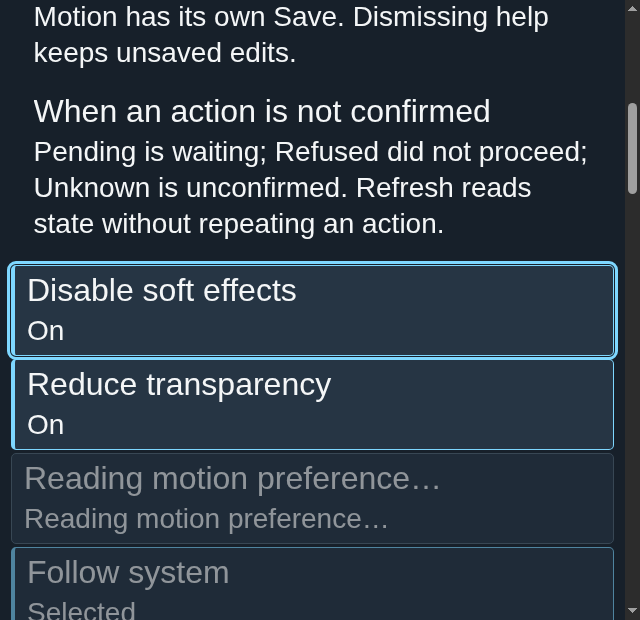
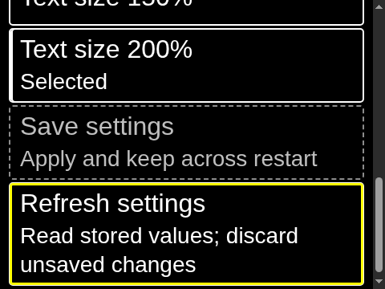

Appearance settings
Choose the desktop appearance and text size in Settings.
Overview
Choose the desktop appearance and text size in Settings.
Anatomy
Choose Night, Dawn or High contrast and a text scale of 100%, 125%, 150% or 200%. Effects off and reduced transparency are deferred appearance choices.
States
A draft does not change the applied appearance. Save settings commits appearance choices; the rendered desktop follows the committed profile. Refreshing appearance discards unsaved edits.
Specimen
Real Elm interface. Simulated desktop. Client interiors are fixtures.
Behavior
Choose a theme and scale, then save. Selection and keyboard focus are distinct. Settings changes desktop appearance; the documentation theme and font scale remain independent.
Accessibility
Theme and scale choices expose their selected state separately from keyboard focus. Reach each choice and Save settings by keyboard, and keep the status visible and readable at 200% text. Enlarged text must not hide the save action or its outcome.
Content
Identify Night, Dawn and High contrast and the 100%, 125%, 150% and 200% text scales by name. Effects off and reduced transparency are also deferred appearance choices. A saved result confirms the stored values; a refusal asks the user to refresh and choose again. An unconfirmed save stays unconfirmed and is not repeated automatically.
Evidence



Captures show the running interface; they are not simulated fixtures.
View Settings source on GitHub (external reference).